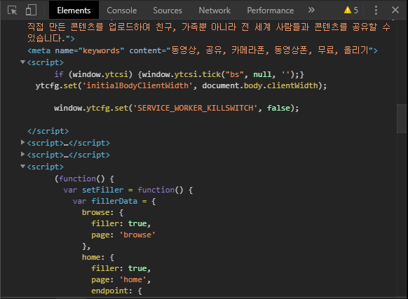
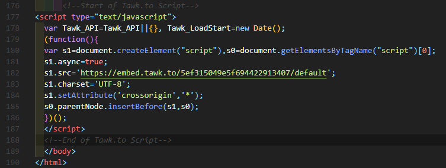
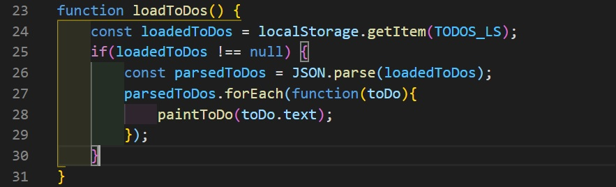
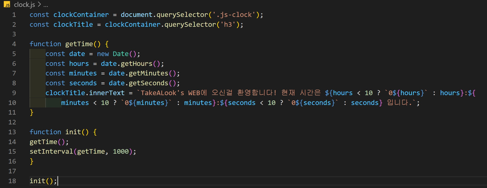
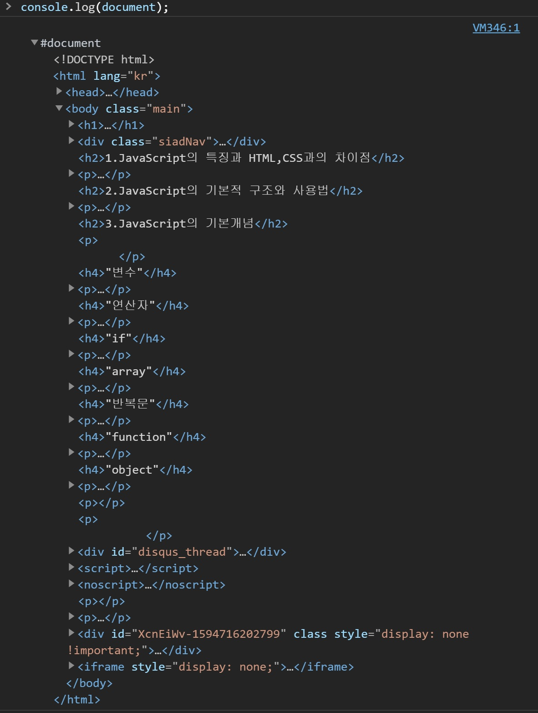
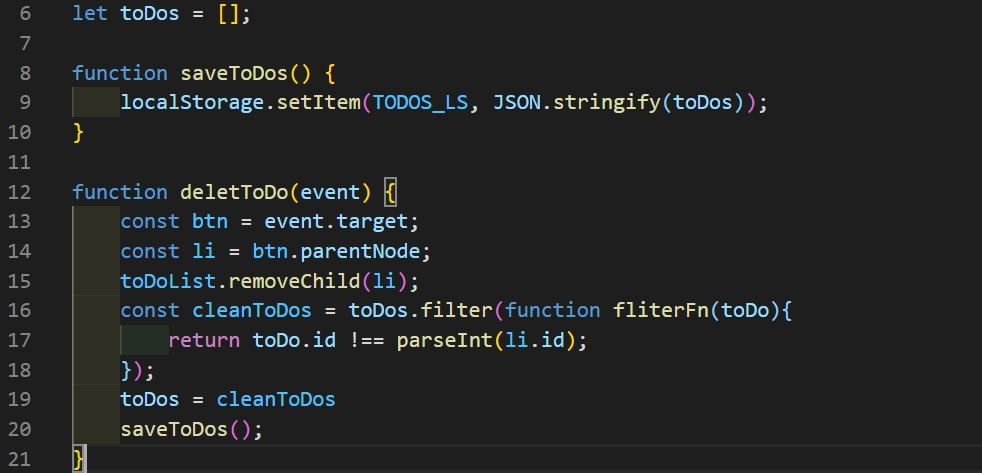
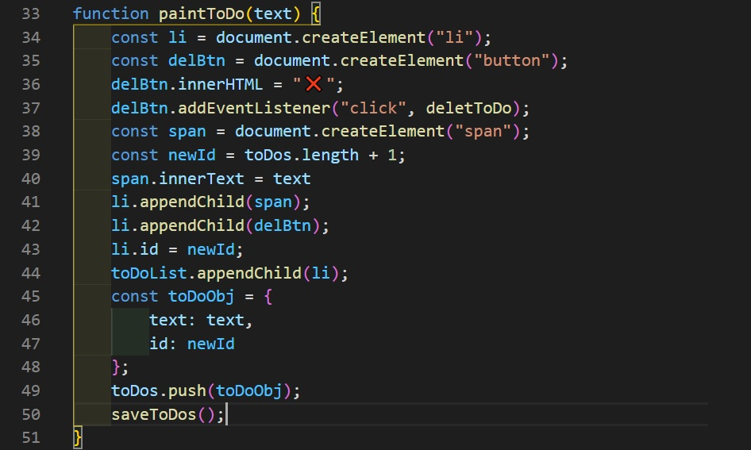

JavaScript의 가장 큰 특징은 디버깅이 가능하며 동적이다. C++이나 Python과 같이 컴파일 언어라는 것이다.
이와 반대로 HTML과 CSS는 디버깅이 불가능한 언어이기 때문에 매우 정적이다. 한번 문서에 입력되어 화면에 출력을 하면,
변하지 않고 유지되기 떄문이다. 물론, CSS의 mediaquery를 이용하면 동적인 화면을 구현가능하다.
하지만, JavaScript는 유저와의 상호작용을 통해 HTML과 CSS를 수정을 할 수 있다는 점에서 의미가 다르다.
즉, 우리들이 평소에 WEB에서 누르던 버튼들은 전부 JavaScript로 만들어 졌다고 봐도 과언이 아닐정도로 매우 중요하다고 할 수 있다.
아래의 사진은 실제 youtube의 JavaScript 코드중 일부를 캡쳐한 것이다.

JavaScript는 변수를 설정하고 내장되어있는 함수와 문법을 이용하여 프로그래밍하는 구조를 가지고 있다.
JavaScript는 브라우저의 Console창에서 디버깅이 가능하며, WEB을 만들때는 HTML의 문서에서 script Tag를 이용하여
바로 사용하거나 --.js 의 형식으로 만든 파일에서 정의하여 link Tag를 이용할 수 있다. 아래의 사진은 이 Page의 사용예제이며, HTML문서 위에
직접적으로 사용한 방식이다.

변수는 모든 프로그래밍언어의 기본 요소중 하나다. 코딩을 하기 위해서는 일종의 수치나 문자열을 사용할 필요가 있는데, 그것을 저장할 수 있는 공간이 이 '변수'인 것이다. 변수의 형태는 언어마다 다르지만, JavaScript의 변수는 주로 let, const, var 3가지중에 하나를 사용한다. 그중에 let은 선언이후에도 변경이 가능하고, const는 한번 선언하면 변경이 불가능하다. 실제 변수의 예제는 바로 위 2.JavaScript의 구조와 사용법의 사진을 보면 볼수있다.
JavaScript는 HTML, CSS과 다르게 Console내부에서 연산이 가능하다. 따라서 +, -, /, * ...등을 이용하여 연산을 할 수 있다. 즉, HTML에서는 1+1을 입력하면 그대로 1+1로 출력되지만 JavaScript는 1+1을 계산해서 결과인 2를 출력한다. 이것이 JavaScript가 동적인 언어라는 증거가 된다.
if, 같은 말로 조건문은 말그대로 코드의 실행에 조건을 걸고 조건에 따라 다르게 변화를 줄 수 있게하는 문법이다. 예를 들어,
i라는 변수가 1이라는 값을 가졌을때는 화면을 검은색으로 만들고, 2라는 값을 가지면 흰색으로 만드는등의 일을 할수있다.
물론 조건의 갯수에 대한 제한은 없기에 여러개를 사용할수있고, 단 한 개의 조건만 이용할수도있다. 조건문을 잘 활용하면, 사용자의
행동에 따라서 작동하는 동적인 WEB을 구성하기 좋기때문에 잘 공부해둘 필요가 있다.아래 사진은 if문을 활용한 예시다.

array, 같은 말로 배열은 데이터 종류의 일종이다. 특징은 [ ]에 저장되며, 한 개의 array에 다수의 정보를 저장한다. 그리고 수를 제외한 string, boolean 등도 저장 가능하다. array는 주로 반복문에 자주 사용된다.
반복문은 말 그대로 반복되는 코드를 편리하고 함축적인 코드로 재구축하는 용도로 사용한다. 단순히 어떤 정보를 출력하는 코드를 반복하여 적는 것 보다 반복문을 이용하여 단축하는 방식이 유지, 보수에도 편리하다. 또한 문서의 크기가 줄어들어서 서버 용량을 적게 차지한다는 점에서 경제적인 측면이 더 좋다고 할수있다. 그렇기에 반복문은 효율적인 코딩의 기본인 단순 중복을 줄인다는 해결방법의 가장 근본적이고 기본적인 방식이라고 말한다. 반복문은 주로 for와 while을 사용하여 만든다.
function, 같은 말로 함수는 개발자가 쓰고싶은 기능을 코드로 구현하여 담아두는 상자와 같은 개념이다. 함수라는 개념 자체에 어떠한 기능이 있는 것이 아닌,
함수라는 상자에 자신이 필요한 기능의 코드를 담아 필요할 때 꺼내 사용하는 것이다. 기본적으로 function 함수명( 인수 ){ 함수의 내용 }의 구조를
가지며, 순차적으로 코드를 읽는 컴퓨터의 특성상 코드의 상단에 적어줘야 함수를 사용하는 것이 가능하다. 아래의 사진은 이 Page의 시계기능에 관련된
JavaScript이다.

object는 array와 비슷한 개념이지만, 활용방식이 다르다. object는 { }에 변수, 함수와 같은 대부분의 내용을 담을수있다. 기본적인 구조로는 {key : value}로 저장되는데,
key는 저장된 정보의 주소 또는 이름이라 할수있다. 즉, 정보를 호출할때 key에 저장된 값으로 호출을 하면 그 key에 저장된 value값이 출력된다. 응용방식으로 key를 function의 이름으로 지정하고
value에 function의 기능을 저장하면, key를 호출함으로서 function을 실행하는 것이 가능하다. 참고로 document나 event와 같이 JavaScript에서 기본적으로 제공하는 문법도 사실 object이다.
실제로 console.log(document);를 실행하면 object의 형식으로 document에 소속된 key와 value를 볼수있다. 아래의 사진은 직접 console창에서 document를 출력한 예시이다.

위의 사진을 보면, 결국 우리는 document라는 object속에서 Page를 구현하고 있는것이다.
filter()는 임의의 array의 내용들을 callback 함수를 이용하여 조건에 따라 추출하여 새로운 배열을 만들어주는 문법이다. filter()애서 ()안에 함수를 지정하여 조건을 만들어 줄수있다. 활용예시는 아래 사진과 같다.

사진의 코드를 보면, 6번 줄에 let toDos = [];로 array변수를 지정하고 12번 줄의 deletToDo()함수에서 이용했다. 이 코드의 기능은 toDoList의 목록 추가 제거할 때 활용됬다.
특히 toDos는 li.appendChild()로 생성된 li Tag가 저장되기 때문에 Page의 중심 코드라고 할수있다.
appendChild는 Javascript를 이용해서 HTML에 직접적으로 Tag를 생성할 때 사용하는 문법이다. 아래 사진은 To do list에 실제 사용한 예시다.

사진 속 코드에서 알수있듯이 [추가할 대상].appendChild(만들 Tag);로 사용한다. 유저가 버튼을 눌렀을 때 실질적으로 반응하는 코드이기 때문에 매우 활용도가 높은 문법이다.
한 가지 팁으로 li.appendChild(delBtn)에서 delBtn처럼 변수를 넣어 활용할수도있다.
이 파트에서는, TakeALook's WEB에 활용된 JavaScript 예시들을 공개한다.
이 코드는 실시간으로 적용되는 시계 기능으로 To do list에 가보면 볼수있다.
이 코드는 user가 입력한 내용을 local 저장소에 저장하여 추후에 다시 Page에 방문하더라도 그 내용을 기억해주는 기능이다. To do list에 가보면 사용할수있다.
이 코드는 To do list의 메인 기능을 담당하며, local 저장소에 내용을 저장하고는 기능과 JavaScript로 HTML을 수정하는 기능이 있다.